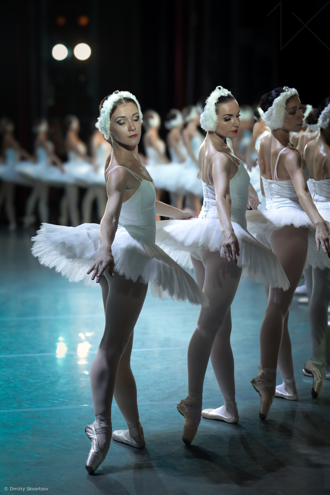

Since its opening in 1875, the Palais Garnier has hosted countless ballets, operas, and concerts. Even today, it continues to be a
significant cultural institution in France. It's a place where you can connect with Parisian history and appreciate the artistic traditions that have thrived here for centuries.
Media
Located in the heart of Paris near the Galeries Lafayette, Place Vendôme,and Place de la Concorde, visiting the Palais Garnier fits perfectly into a day of exploring some of the city's other famous sights.

Location
Pl. de l'Opéra, 75009 Paris, France Every day: 10 am to 5 pm 17 July – 11 September: 10 am – 5:30 pm